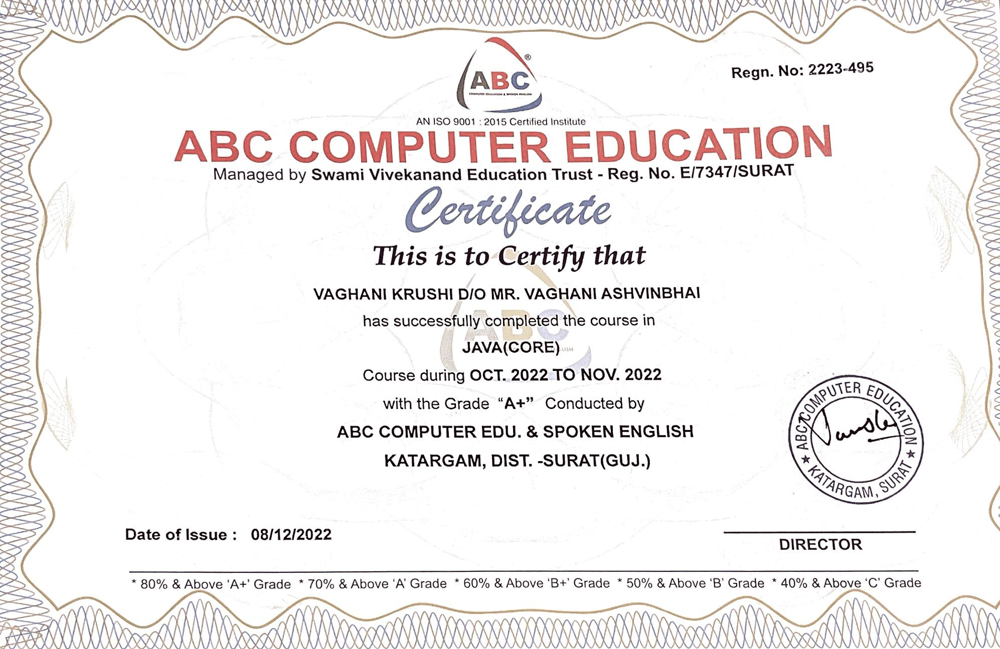
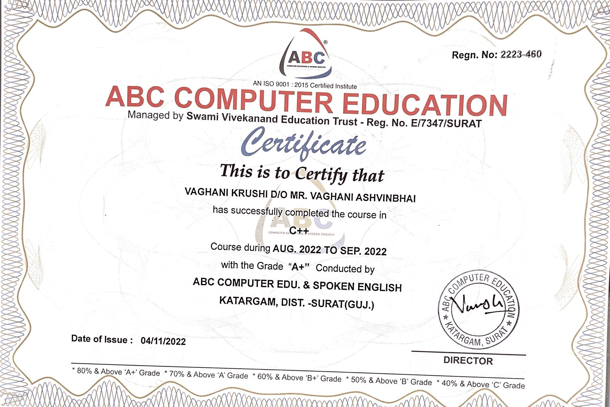
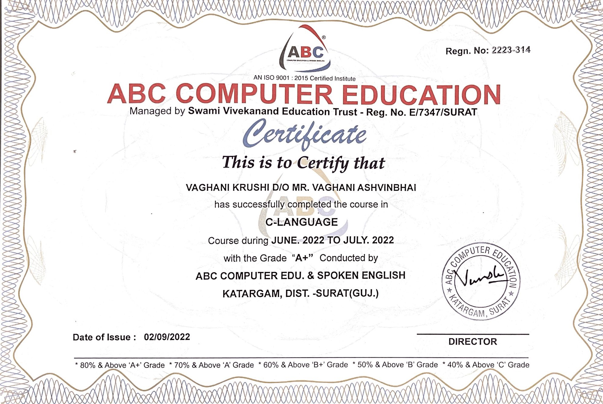

I am skilled and intelligent in many percspective. I got 89% (A) in higher secondary school. Other than as mentioned in the education section that I have done courses for the languages like C, C++, and Java. I have also got A+ in all the respective Courses. i will attach my certi's at the end of this page.
I am also oriented person with a mindset of learning new and doing something rather than wastin time.I am also really good at communication with the people and I can easily interact with most of the people.I am able to handle the critical situations or problems and erros realted to code. I am team oriented too.
You will also find my name in voluntary works for helping people in different sectors.I am also the member of Computer science Society where we organize events and help students in different purpose.
Other than that I have also interest in many sports and activites and I have taken part in them too. Some of the sports and activitied I am interested in are:-
I have won many competitions in most of the sports including :- Taekwondo, Dance, Volleyball.
Certificates of my courses : (Java, C, C++)
  